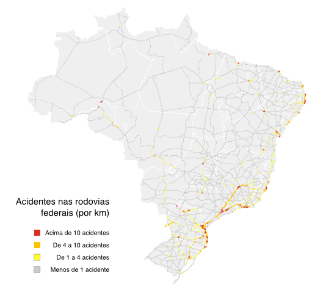
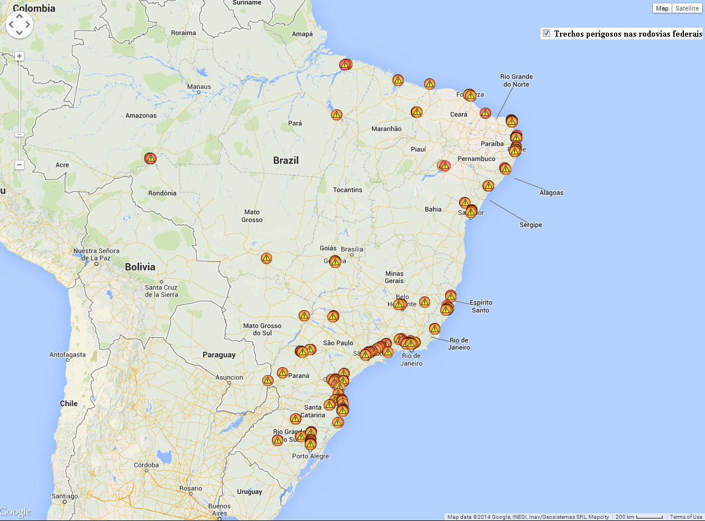

Mobilidade / Arquivo
Acidentes nas rodovias federais
Um mapa procura as concentrações de acidentes em rodovias federais em 2012.
Publicação original


Existem dois temas recorrentes nas análises que procuro trazer nas publicações do blog. O primeiro é sobre a dificuldade de conseguir dados públicos de maneira estruturada, apesar do Brasil ser um país bastante avançado na coleta de dados (são poucos países no mundo que realizam um Censo tão estruturado quanto o nosso, que possuem uma pesquisa de orçamento familiar de qualidade, que possuem uma coleta de dados organizada sobre entrada e saída de bens, etc.). Quase que inexplicavelmente, nosso grande defeito está na divulgação pouco adequada, tanto no sentido da organização das informações quanto da publicidade que se dá para os dados. O segundo ponto está inexoravelmente ligado ao primeiro: o uso pouco adequado da informação. Exemplos não faltam. Para que coletar as condições meteorológicas e atrasos nos aeroportos e não utilizar essas informações para antever situações adversas (“Aeroportos, retornos e partidas” e “3 exemplos de boas visualizações de atrasos em aeroportos“)? Porque não divulgar os registros de boletim de ocorrência em um mapa para facilitar tanto a ação da polícia quanto possibilitar que as pessoas possam adaptar seu comportamento (Secretaria de Segurança Pública de São Paulo versus San Francisco Crimespotting)? Acho que a discussão sobre produção, coleta e divulgação de dados no Brasil passa pela análise profunda sobre o papel das instituições públicas nessas tarefas e sobre a estrutura do ambiente de pesquisa brasileiro (que envolve entender porque o monopólio da informação parece ser tão importante aqui).
Enfim, após esse não tão breve desvio, a análise de hoje trata das ocorrências nas rodovias federais. O final de ano está umbilicalmente atrelado à retrospectiva do ano que chega ao fim, ao show do Roberto Carlos e às manchetes sobre os acidentes nas estradas, todos bastante previsíveis. O último, foco dessa análise, envolve três aspectos principais: 1) a característica “epidêmica” das fatalidades nas rodovias brasileiras; 2) a variação em relação ao mesmo ano anterior; 3) a seleção de trechos rodoviários críticos e a referência à baixa qualidade das estradas e a falta de sinalização, nesses trechos e em outros pontos. A manchete é decorrente da divulgação anual pelo DNIT e Polícia Rodoviária Federal e a finalidade dessas informações para os órgãos públicos é clara (ou deveria ser): com base nessas informações é possível selecionar os trechos críticos e tomar ações específicas que induzam a redução de acidentes (campanhas de prevenção, aumento de sinalizações, cobrança das concessionárias para melhorias na infra-estrutura rodoviária, alteração na fiscalização, etc.). Porém, para mim ainda é um pouco obscura a relevância da divulgação da maneira que é realizada e do uso mais adequado do ponto de vista da sociedade. Duas possíveis finalidades seriam a criação de um sentimento de medo que poderia induzir um comportamento mais conservador por parte dos motoristas e a algum grau de fiscalização dos responsáveis pelas políticas de redução de acidentes. Mas definitivamente, esses não parecem ser o uso mais adequado da informação (o primeiro mapa mostra uma visualização pouco útil desses dados).
Imagine, por exemplo, que fosse possível visualizar em um mapa os trechos das rodovias com maior número de acidentes, de maneira que, ao traçar uma rota, um motorista pudesse ser informado sobre os trechos nos quais deveria aumentar a atenção. Ou seja, que fosse possível dar uma utilidade do ponto de vista do indivíduo para a mesma informação coletada. Melhor ainda, e se fosse possível que os aparelhos de GPS e aplicativos como o Waze incluíssem avisos para trechos perigosos e que o motorista fosse avisado com antecedência sobre a probabilidade de se envolver em um acidente em uma determinada curva? Partindo dessas indagações e da mesma base, criei o mapa abaixo (clique na imagem para acessar o mapa no Google Maps – existem pontos duplicados consideram o início e o fim de cada trecho do PNV).


Cabem algumas considerações a respeito dessa visualização. A primeira delas é que não existe uma base georreferenciada dos marcos quilométricos das rodovias brasileiras (vulgo “plaquinha dos quilometros”) – e meu baixo conhecimento de GIS não permitiu que construísse isso. Como alternativa, utilizei o shapefile das rodovias brasileiras que apresenta as rodovias divididas nos trechos do PNV (por ser um segmento, considerei o georreferenciamento do início e do fim de cada trecho). O segundo ponto é que a base de dados parecia ter alguns erros quanto a localização de ocorrências. Possivelmnente, muitas ocorrências devem estar localizadas como se ocorressem próximas a um posto policial, uma vez que esse é o local de registro da ocorrência (o que resulta em muitos trechos sem nenhuma ocorrência pelo simples fato de não haver nenhum posto por perto). De qualquer forma, utilizei a informação disponível computando os acidentes acumulados em cada trecho e a extensão do mesmo para criar uma variável de acidentes por km (acumulados em 2012). A partir dessa variável classifiquei os trechos como graves (mais de 14 acidentes por km – 5% mais periogos), médio (entre 5 e 14 acidentes por km – entre 15% e 5% mais periogosos) e baixo (restante). Essa provavelmente não é a maneira oficial de classificação de risco de rodovias, mas foi uma divisão que julguei adequada (e pelos números de acidentes que definem os quantis pareceu razoável).
Enfim, um trabalho definitivo sobre o tema deveria envolver o cruzamento dos resultados com outras fontes primárias e com as análises consolidadas da PRF. Mas mais do que a precisão das informações e da localização exata dos acidentes, queria deixar aqui o registro de que é possível fazer muita coisa com as informações já disponíveis. Muito se fala sobre essa ser a era da informação e sobre como o fenômeno do “Big Data” vai revolucionar a nossa relação com os dados. Na minha modesta opinião, teríamos avançado muito mais se investíssemos mais tempo na organização adequada dos dados e focássemos nossa atividade intelectual em alcançar um uso efetivamente útil para os mesmos (o que passa pela divulgação irrestrita de todos os dados públicos ou de utilidade pública).
Como sempre, deixo um formulário abaixo para aqueles que quiserem mais informações sobre como realizei essa análise. Os dados foram obtidos no site http://dados.gov.br/dataset/acidentes-rodovias-federais e trabalhados no R (pacote plotGoogleMaps). Utilizei o shapefile do DNIT para coletar as coordenadas dos trechos do PNV e o OpenJump para criar o primeiro mapa. O segundo mapa foi criado no próprio R e armazenado no Google Drive (mais recente e feliz descoberta: Google Drive também armazena e visualiza código html).